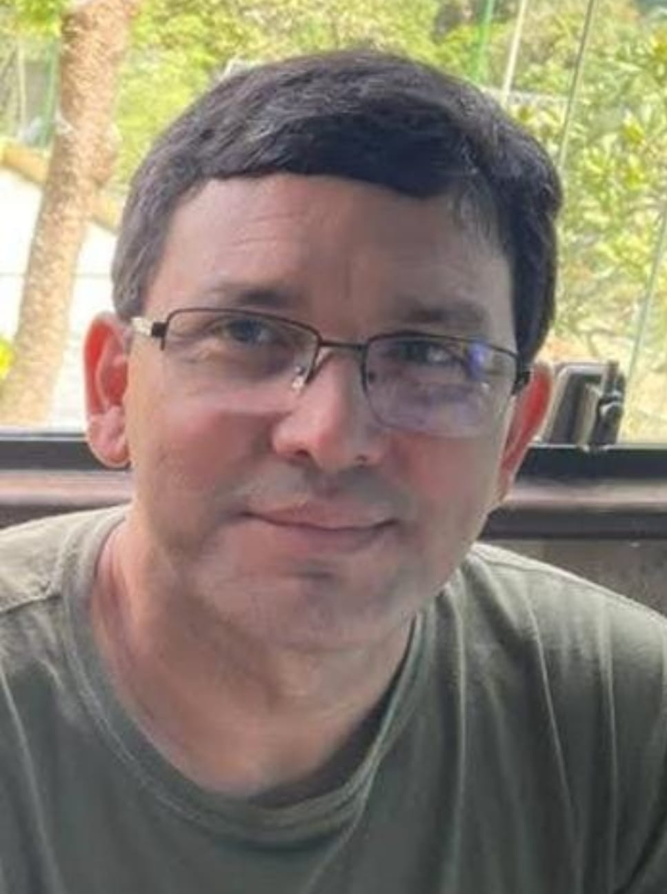
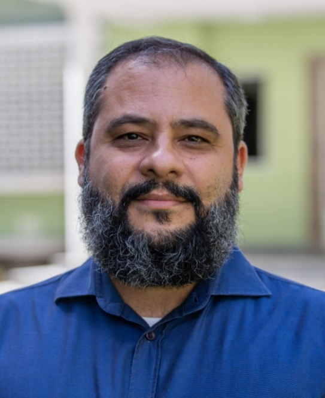

Preletores

Rev. Francisco Cardoso
Pastor da Igreja Presbiteriana Reformada do Recife. Professor de teologia e filosofia.

Rev. Victor Ximenes
Pastor Efetivo da Igreja Presbiteriana de Boa Viagem. Professor no SPN, dentre outros seminários. Casado com Paula e pai de Isabela, Letícia, Rebeca, Clarissa e Gabriel.
Rev. Lutero Rocha
Pastor auxiliar da Primeira Igreja Presbiteriana do Recife.
Rev. Sérvulo Silva
Ministro do Evangelho na Igreja Presbiteriana do Brasil, pastoreando, efetivamente, a Igreja Presbiteriana Pedras Vivas (Recife-PE). Graduado em Teologia pelo Seminário Presbiteriano do Norte e pela Universidade Católica de Pernambuco. Plantador de igreja há 15 anos. Casado com Thais e pai de André, Darah e Hadassa.